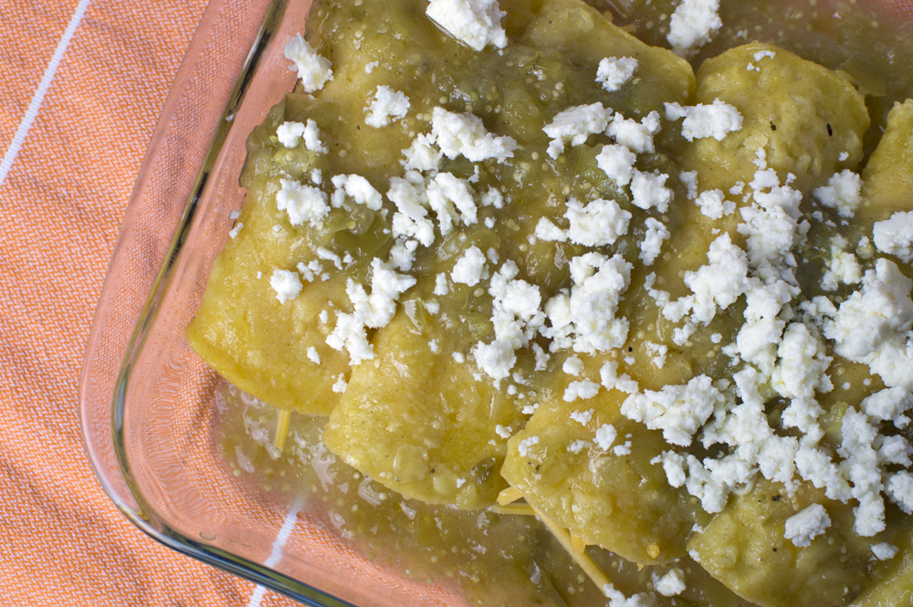

Enchiladas Verdes

Description
This is a traditional and simple recipe, that can either be spicy by choice, spicy by accident, or not spicy at all.
The filling can be any type of meat, or cheese, or you can just eat the saucy tortillas by themselves. I prefer using chicken and
to make thing easier, I'll just get a rotisserie chicken to shred and use that as the filling. The spiciness can also be adjusted by using
more or less jalapenos. For cheese filling or topping, I recommend queso fresco, a nice cheese that can help cut some of the spiciness.
Ingredients
- 2 lbs of tomatillos
- 1 jalapeno pepper
- 1 rotissere chicken
- As many corn tortillas as you want enchiladas
- Canola or vegetable oil
- Water
Steps
- Peel the tomatillos from their dry skin, rip off the stems, rinse, and throw into pot
- Remove the stem from the jalapeno, rinse, and throw into pot
- Add water to pot until the contents are barely covered, then set to a high flame
- While you wait for the pot to come a boil, add a decent amount of oil to a frying pan, and set the heat to medium
- Add one tortilla and fry it until it begins to inflate, flip, wait for it to inflate as well
- Remove the tortilla, attempting to drain any excess oil and place on plate with paper towels
- Repeat steps 5-6 for every enchilada you want to make
- Once the contents of the pot boil, turn heat off, and scoop the contents of the pot with a slotted spoon into a blender
- Add some of the water that was boiling, but not too much, you don't want